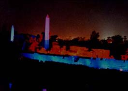

２８．「感動したカルナック神殿の光と音のショー」(写真有)
|
エジプト、ルクソールに行った時の感動である。日がとっぷりと沈み、暑さも和らぎ観光客がカルナック神殿の
「光と音のショー」を見に集まった。８時に始まる、観光客は今か今かと待ち、人の数がどんどん増えていった。空
には満天の星空、神殿の入り口には高さが２０ｍ位有ると思われる左右の城壁が聳え立っている、これが下からライ
トアップされ綺麗である。突然音楽が始まり、ナレーションが「今はＢＣ１０００年前、・・」と始まった。噂では
ドイツ製の音響製品を使っているとのことで、映画館の様な迫力のある音であった。この時に空に一条の太い流れ星
が、右手上空から左手下に向かって長々と位現れた。この瞬間自分が映画のワンシーン、クレオパトラかラムセス二
世の映画撮影に参加したか、今にも英語の字幕が出てきそうな映画を見ている錯覚をした。観衆からは「ワー」とい
う声が上がった。素晴らしい光と音のショーになった、解説は英語であるがまだ不慣れの為にそんなには聞き取れな
かったのが残念であった。  カルナック神殿、光と音のショーの最中の１枚です。 |